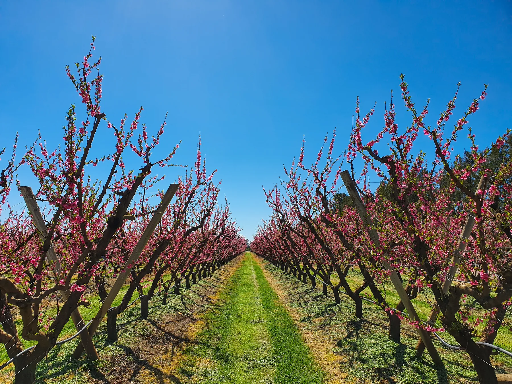
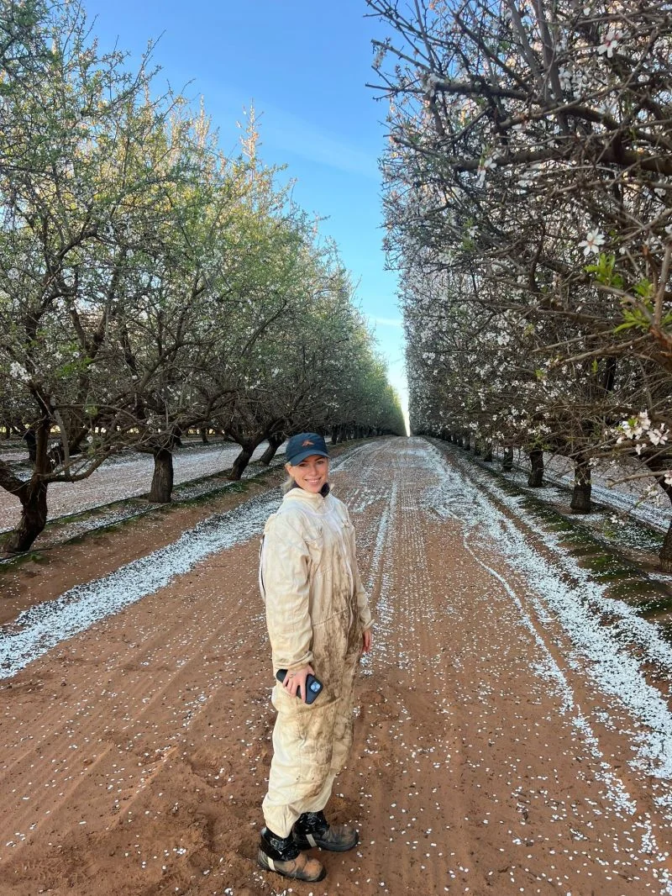

Chelsea Hall
Chelsea Hall is a nutritional agronomist working with horticultural growers across Victoria and Southern NSW. She specialises in cherries, stone fruit and pome fruit, using soil and plant results alongside observations in the block.

Plant and soil science applied in the orchard.
Chelsea works across the Goulburn, Yarra and Ovens valleys, as well as Piangil, Young and Batlow.
She holds a Bachelor of Agricultural Science with First Class Honours from the University of Melbourne, majoring in Plant and Soil Sciences. That background informs her investigation of the factors behind a crop imbalance.
Crops and growing regions.
Soil, leaf and sap testing informs Chelsea’s nutrition advice for cherries, stone fruit and pome fruit.

Working alongside growers.
Chelsea joined Hybrid-Ag as a graduate agronomist in 2020. Her experience includes vineyard work at Monichino Wines, Brown Brothers and McGlashan’s Winery, an internship with ANZ’s Agribusiness division and research work with Kalyx Harvesting.
She wants growers to understand the reasoning behind a recommendation. Chelsea works through test results and orchard observations with them, explaining what she recommends and why. Following how the crop changes over time is part of that work.
Outside work, Chelsea keeps bees and enjoys extracting honey.
Chelsea Hall · Horticulture VIC & Southern NSW
Useful places to start.

Choosing the right test
Understand what each test measures and when it may be useful.
Read
Position. Pattern. Plan.
Use current and previous results to discuss what to do next.
Read
Make every sample a useful reference.
Keep the original report and sample details together as a useful reference for future crop nutrition decisions.
ReadTalk through your orchard results with Chelsea.
Send your soil, leaf or sap results, or get in touch with a question about your crop.